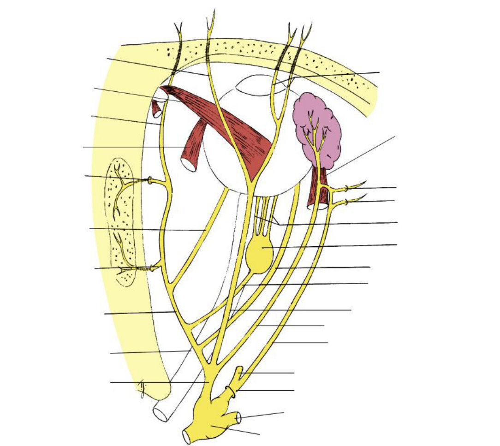
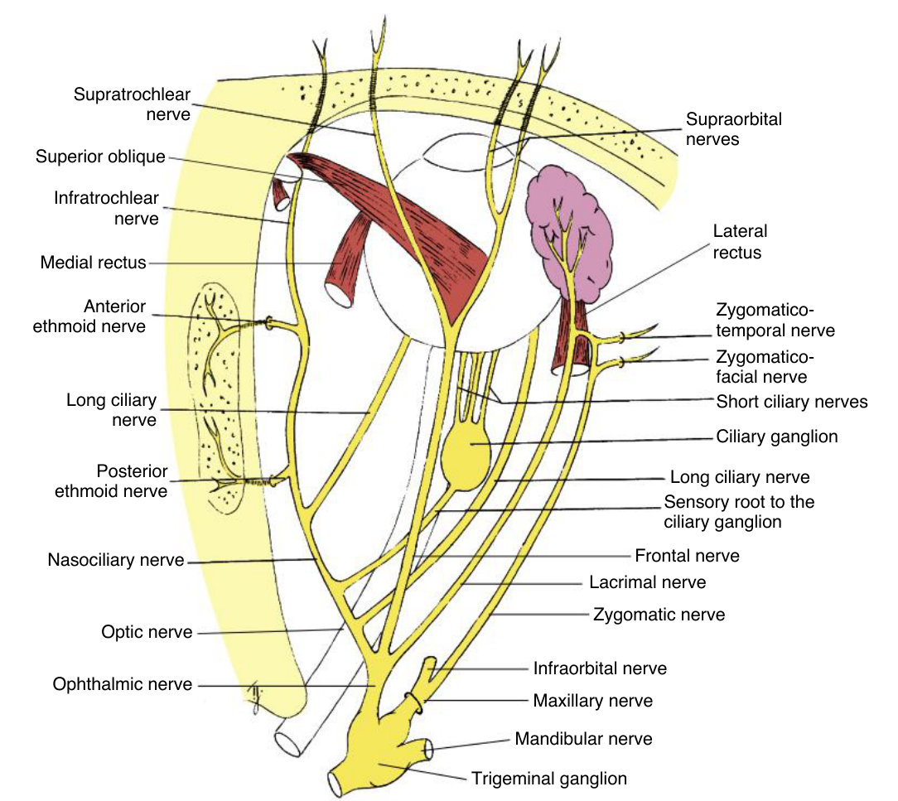
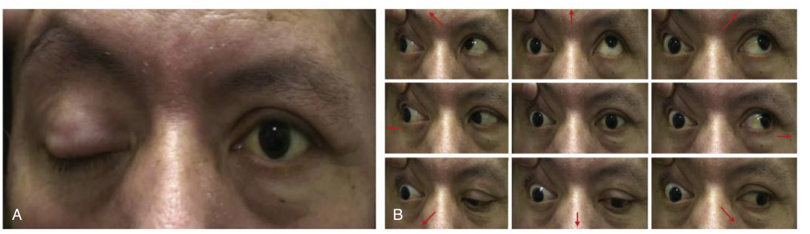
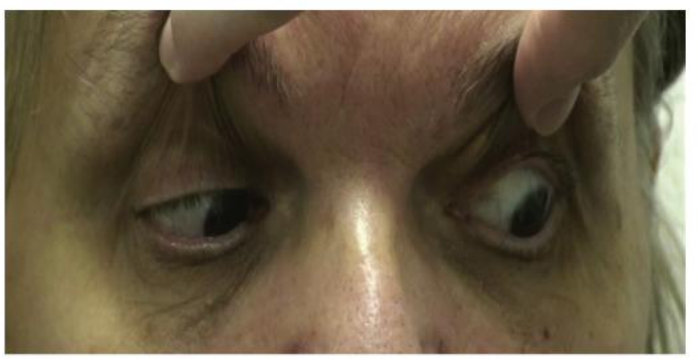
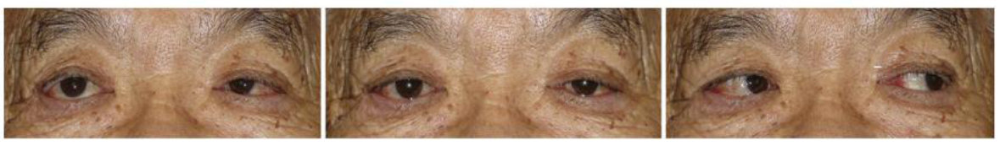
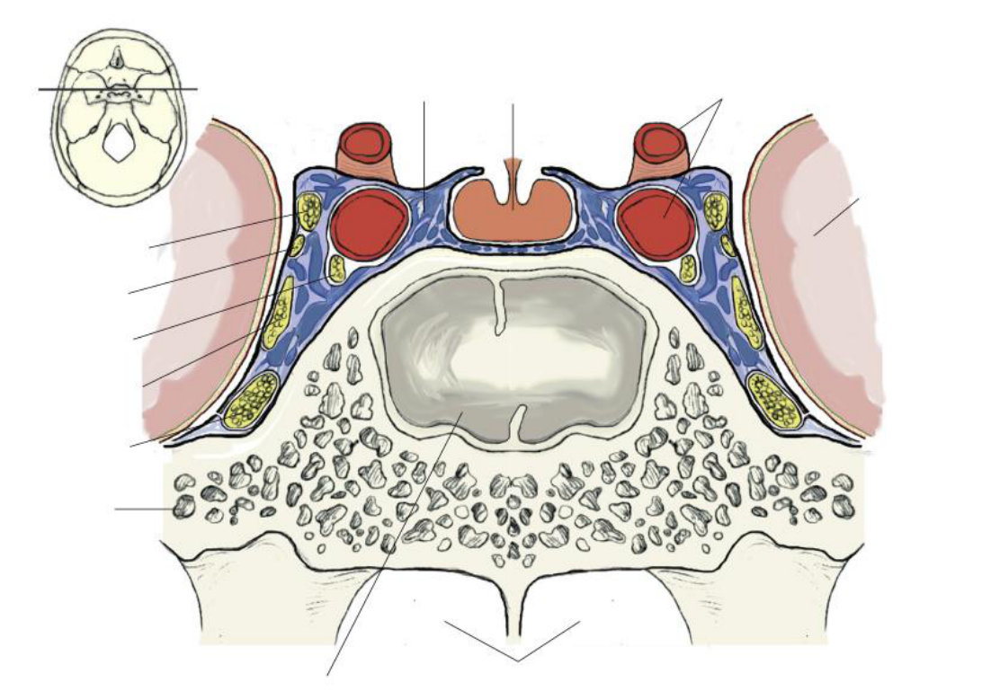
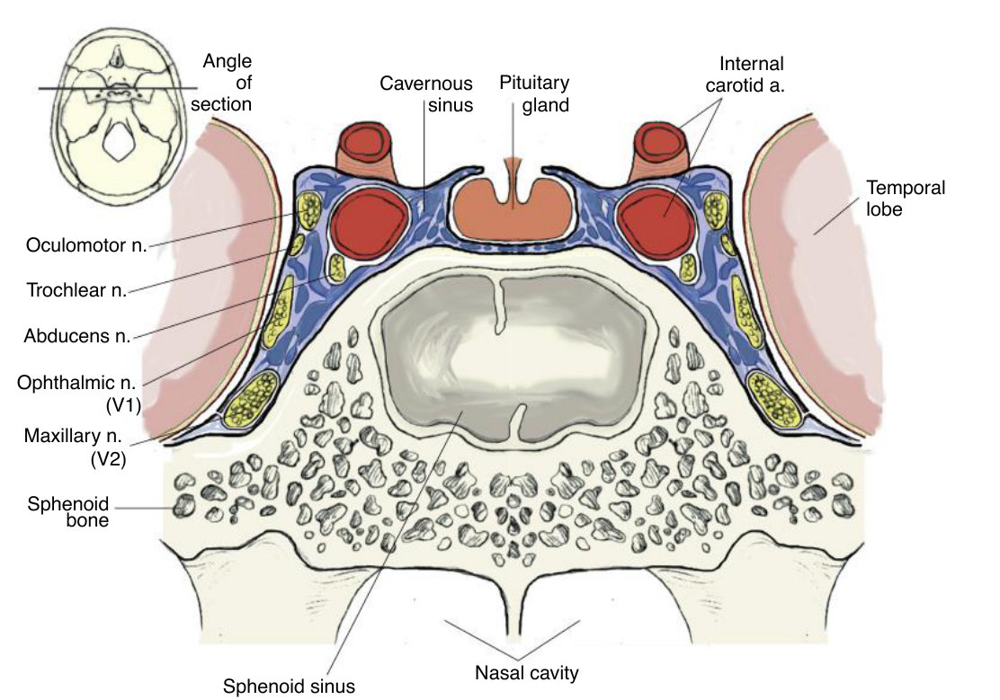

Two autonomic roads, three palsies
Sympathetic fibres take three neurons and a long detour through the chest. Parasympathetic fibres take two and stay near the target. Everything else follows from that.
Trace the sympathetic and parasympathetic routes to the eye end to end, naming every synapse — then tell a CN III, IV and VI palsy apart from the primary position alone.
The branches, pathways and functions of each branch of the ophthalmic nerve · the branches of the maxillary nerve around the orbit · the central, preganglionic and postganglionic sympathetic pathways and how the sympathetic system affects the eye · the same two for the parasympathetic · the pathways of CN 3, 4 and 6 · the characteristics of a CN 3, 4 or 6 palsy · the functions and pathway of the CN 7 branches around the eye.
Exam guidelines · p. 6
1. Sensation: V1, built backwards
The textbook follows sensory fibres the way the signal travels — from the tissue back to the brain. Learn them in that direction.
| Nerve | Branches | Supplies |
|---|---|---|
| Nasociliary | five: infratrochlear · anterior ethmoid · posterior ethmoid · long ciliary · short ciliary (via the ciliary ganglion's sensory root) | medial canthus, caruncle, canaliculi, lacrimal sac · nose and sinuses · cornea and anterior segment |
| Frontal | two: supratrochlear · supraorbital | forehead, scalp, upper eyelid |
| Lacrimal | none | lateral upper lid, temple, the lacrimal gland |
The 2 long ciliary nerves leave the globe about 3 mm either side of the optic nerve and are visible at 3 and 9 o'clock; they also carry the sympathetic fibres to the dilator. The 6–10 short ciliary nerves leave in a ring and carry all three fibre types.
Herpes zoster on the tip of the nose predicts eye involvement — because the tip (anterior ethmoid nerve) and the globe (ciliary nerves) are both branches of the nasociliary nerve, and the virus travels down that nerve. About 10% of zoster cases involve V1.
TB 13 · p. 208–210
V2 around the orbit: the infraorbital nerve (lower lid, cheek, upper lip) and the zygomatic nerve (zygomaticotemporal = temple; zygomaticofacial = lateral cheek and lower lid). Both leave by the inferior orbital fissure. Referred pain lives here: an abscessed upper tooth can be felt as eye pain.

Answer: Fig. 13.1 with labels

2. The autonomic plan, in one table
| Sympathetic | Parasympathetic | |
|---|---|---|
| Preganglionic cells | spinal cord T1–T3 | midbrain (Edinger-Westphal) · pons (lacrimal nucleus) |
| Ganglion | far from the target: superior cervical | near the target: ciliary · pterygopalatine |
| Transmitter | norepinephrine | acetylcholine |
| Eye targets | dilator · Müller muscle · choroidal vessels · lacrimal vessels | sphincter · ciliary muscle · lacrimal gland |
The sympathetic road — three neurons
In the sinus the fibres hitch a ride on cranial nerves to their targets:
| Target | Arrives by | Effect |
|---|---|---|
| Iris dilator | V1 → nasociliary → long ciliary nerves | mydriasis |
| Müller muscle | CN III superior division, with the levator branch | widens the palpebral fissure |
| Choroidal vessels | sympathetic root → ciliary ganglion (no synapse) → short ciliary | vasoconstriction |
The parasympathetic road — two neurons
Effects: miosis and accommodation. Most fibres go to the ciliary muscle; only about 3% reach the sphincter.
About 2 × 1 mm, inside the muscle cone between the lateral rectus and the optic nerve, ~1 cm in front of the optic canal. Three roots: parasympathetic, sensory, sympathetic — but only the parasympathetic fibres synapse. The short ciliary nerves leaving it carry all three kinds.
TB 14 · p. 222–224 · Handout 10 · p. 5–6
And for tears: lacrimal nucleus (pons) → CN VII → geniculate ganglion (no synapse) → greater petrosal + deep petrosal = vidian nerve → pterygopalatine ganglion (synapse) → maxillary → zygomatic → lacrimal nerve → gland.
3. The three palsies, side by side
| CN III | CN IV | CN VI | |
|---|---|---|---|
| Muscles lost | SR, MR, IR, IO, levator + sphincter, ciliary muscle | SO only | LR only |
| Primary position | ptosis · eye out (and down) | eye up (hyperdeviation) | eye in (esotropia), worse at distance |
| Cannot | adduct · elevate or depress when abducted · elevate when adducted | depress when adducted | abduct |
| Pupil | dilated, accommodation reduced | normal | normal |
| Head posture | — | tilt to the opposite shoulder, chin down | face turned toward the paralysed side |
| Typical cause | posterior communicating artery aneurysm | congenital, trauma | trauma, raised intracranial pressure |
The pupil fibres lie superficially in CN III as it leaves the midbrain. So a compressive lesion (an aneurysm) hits them first: a fixed dilated pupil with the muscle palsy — an emergency. Being superficial, they are also nearest the nerve's own blood supply, so an ischaemic lesion (diabetes) usually spares the pupil.
TB 13 · p. 215 · TB 14 · p. 229



4. Why CN VI is the fragile one
It has a long course with a sharp bend over the petrous ridge, tied down under the petrosphenoidal ligament. Raised intracranial pressure pushes the brainstem back and stretches it over the bone — which is why it is the commonest acquired isolated eye-muscle nerve palsy, and why a CN VI palsy is a poor localising sign.
In the lateral wall, top to bottom: CN III · CN IV · V1 · V2. Loose inside the sinus, beside the internal carotid: CN VI. That is why a carotid aneurysm here often takes CN VI first, and why a lateral rectus palsy plus a Horner syndrome on the same side localises to the cavernous sinus.
TB 13 · p. 213, 215, 218

Answer: Fig. 13.7 with labels

Lateral wall, top down: oculomotor · trochlear · ophthalmic (V1) · maxillary (V2). Free in the sinus beside the internal carotid artery: abducens.
5. CN VII around the eye
Temporal (frontal branch) → frontalis and upper orbicularis · zygomatic → lateral lower orbicularis · buccal → medial lower orbicularis. The upper part of the facial nucleus takes input from both motor cortices, so a one-sided cortical lesion spares the forehead and lids, while a lesion of the nucleus or nerve paralyses the whole side — and the eye cannot close: lagophthalmos, with a drying cornea.
Touch the cornea and three things happen in both eyes: blink · tearing · miosis. Afferent: ciliary nerves → nasociliary → V1 → pons. Efferent: CN VII to the orbicularis (blink) · CN VII via the pterygopalatine ganglion (tears) · CN III via the ciliary ganglion (miosis). A lesion of V or VII weakens it.
TB 14 · p. 227 · TB 13 · p. 219
6. Drill
More: Mixed quiz — Chapter 10 · pictures only: Image quiz — Chapter 10.
Read study script § chapter 10, sections 5, 6 and 11, then Handout 10 pages 5–7. Write both autonomic routes out from memory; if you can only do one a day, do the sympathetic one first — chapter 11 is built on it.
Ask your teacher — "why do sympathetic fibres go down into the chest at all?", "quiz me on the three palsies from primary position only", "which fibres synapse in the ciliary ganglion and which just pass through?".